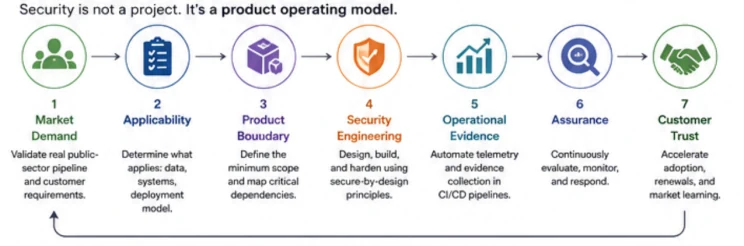
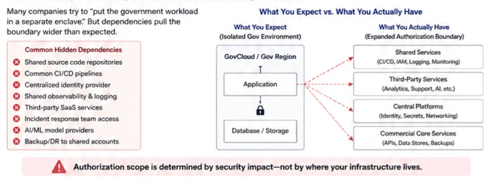
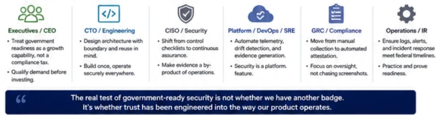

The Government Is Not Buying Your Compliance Certificate
What one customer requirement made me rethink about FedRAMP, product security—and the future of government trust
It started with a customer requirement.
Nothing dramatic.
No breach. No zero-day. No emergency call from the board.
Just one of those requirements that lands during a security conversation and initially looks like another item to understand, scope and eventually turn into work:
FedRAMP.
Coming from information security engineering, my first questions were predictable:
What controls apply? What architecture changes would be required? Where should the boundary sit? What evidence would we need? How much engineering effort would this consume? And how long would it take?
But the more I looked at the requirement, the more I found myself asking a different question:
Why is the customer asking for this in the first place?
Not, “What is FedRAMP?”
Not even, “How do we become FedRAMP certified?”
But:
What problem is the government actually trying to solve when it asks a product company for this level of security assurance?
That question changed the direction of my research.
And it changed the way I think SaaS and EdTech companies—particularly those operating with lean security, platform and IT teams—should approach government-grade security.
We may be starting the conversation in the wrong place
Most FedRAMP conversations quickly become discussions about controls, assessors, architecture, documentation, cost and timelines.
Those things matter.
But I no longer believe they are the first questions.
The first question belongs in the executive room:
What confidence is the customer attempting to buy?
FedRAMP exists partly to give federal agencies a standardized and reusable approach for evaluating cloud security while reducing duplicated assessment work across government. [1]
But the cloud service being assessed does not stand still.
Code changes.
Infrastructure changes.
Dependencies change.
New vulnerabilities emerge.
Configurations drift.
People change roles.
Third-party services evolve.
AI capabilities appear inside architectures that may not have contained them a year earlier.
And attackers certainly do not synchronize their activity with our audit calendar.
That leads to a different way of looking at government assurance:
The customer is not simply asking whether the product was secure when somebody assessed it.
The customer needs confidence that the provider can continue to understand, operate and demonstrate the security of that product as it changes.
That difference is becoming increasingly visible in FedRAMP itself.
Why this conversation matters now
2026 is an important transition year.
FedRAMP has launched its Consolidated Rules for 2026 and is expanding the 20x certification model. The Class A submission pipeline opened on August 3, 2026, while the Class B and Class C pipelines are scheduled to open on August 31. [2]
This is not merely a naming change.
The direction was already visible in OMB Memorandum M-24-15, which called for greater automation, reuse, APIs and machine-readable authorization and monitoring artifacts, including OSCAL or successor standards. [1]
In other words, the strategic direction is not simply:
turn the compliance PDF into a digital PDF.
It is closer to:
make assurance information increasingly usable by machines, reusable by customers and connected to how the service actually operates.
That changes who needs to be involved.
This is no longer only a GRC conversation.
It is a product, platform and security-engineering conversation

The shift from scanning to evidence of security effectiveness
One of the clearest signals comes from vulnerability management.
FedRAMP’s 2026 Vulnerability Detection and Response rules go significantly beyond the traditional idea of scheduled vulnerability scans.
Providers are expected to systematically and persistently identify weaknesses through capabilities that can include scanning, threat intelligence, penetration testing, vulnerability disclosure, automated control testing, incident response and supply-chain monitoring. [3]
More importantly, FedRAMP explicitly encourages providers to use their existing security and architecture-review processes rather than create disconnected “FedRAMP-only” vulnerability processes inside separate compliance functions. [3]
That distinction is important.
The traditional operating model can look like:
Engineering builds → Security scans → GRC collects evidence → Assessor verifies.
The emerging model looks more like:
Engineering and operations perform security work → systems produce verifiable evidence → security and assurance continuously consume it.
For a CISO, that is a fundamentally different proposition.
It means compliance should increasingly become an output of a functioning security system, rather than a parallel system attempting to reconstruct what engineering did last month.
Why this becomes particularly interesting for EdTech
Most education technology companies were not founded to become government security platforms.
They were created to help teachers teach, students learn, institutions assess progress, deliver content, personalize learning or operate educational ecosystems.
Security capabilities generally mature alongside the business.
An established EdTech company may already have:
SOC 2.
ISO 27001.
Penetration testing.
SAST and SCA.
Cloud security.
Vulnerability management.
Incident response.
DevSecOps practices.
Yet a government or public-sector opportunity can expose a harder question:
Can all of those individual capabilities operate together as one continuously explainable product-security system?
That question matters in education.
The U.S. Department of Education currently reports that school districts across the country experience an average of five cyber incidents per week and highlights disruption to teaching, operations, finances and community trust among the consequences. [4]
So when an education customer asks difficult security questions, we should be careful not to dismiss everything as procurement bureaucracy.
There is often a risk story underneath the requirement.
Now imagine a fairly normal SaaS architecture
Consider a fictional mid-market EdTech company.
Let’s call it LearnSphere.
LearnSphere operates a modern multi-tenant SaaS platform.
It uses cloud infrastructure, centralized identity, infrastructure as code, shared CI/CD, observability, security tooling, customer-support systems, analytics and an emerging AI capability.
Then a significant government opportunity appears.
Someone proposes the apparently obvious solution:
“Let’s create a separate government environment.”
That may be the right answer.
But now follow the dependencies.
Does that environment use the same source repository?
The same CI/CD systems?
The same identity provider?
The same secrets platform?
The same logging infrastructure?
The same support personnel?
The same analytics services?
The same software supply chain?
The same AI provider?
The same incident-response organization?
Where do backups go?
Suddenly the question is no longer:
“Where should we host the government environment?”
It becomes:
“What is the actual security boundary of our product?”
FedRAMP’s Minimum Assessment Scope rules are specifically intended to avoid unnecessarily broad assessments while still including the resources and connections needed to understand the confidentiality, integrity and availability of the offering. [5]
The boundary therefore follows security impact and dependencies, not simply the cloud account or region that appears on the architecture diagram.

There is another assumption worth challenging
Government readiness does not automatically mean creating a completely separate government version of the commercial product.
M-24-15 explicitly directs FedRAMP to avoid unnecessarily promoting a split between commercially focused and government-focused cloud instances and says that, in general, federal agencies should use the infrastructure relied upon by the provider’s commercial customer base. [1]
That is a fascinating policy direction.
It does not mean every federal workload should simply be dropped into the commercial environment.
It means the architecture question deserves more thought than:
Government customer = separate stack.
A dedicated environment may reduce certain risks.
But it can also create:
product divergence,
duplicated testing,
different release cycles,
patching complexity,
additional cloud cost,
duplicated operational tooling,
and an environment that must remain secure long after the certification project ends.
This leads to a principle I think technology leaders should consider carefully:
The cheapest environment to assess may not be the cheapest product to operate.
Start with market demand—not certification anxiety
This is why the first step in my Government-Ready Product Security Flywheel is not compliance.
It is Qualified Market Demand.
Before consuming engineering capacity, leadership should establish:
Is there a real opportunity?
Which customer?
Which product?
Which information?
Which deployment model?
What security outcome is actually contractually required?
FedRAMP’s current scope covers relevant cloud services that create, collect, process, store or maintain federal information on behalf of an agency, with defined exclusions and examples. [6]
So the first FedRAMP discussion should not automatically be:
“Who should our assessor be?”
It should be:
“What business, product and risk decision are we actually making?”
Then make evidence an output of engineering
NIST’s Secure Software Development Framework recommends integrating secure-development practices into the SDLC rather than treating security as an activity bolted on after development. [7]
I believe government assurance increasingly needs the same mindset.
If code is approved through a secure pipeline, the pipeline should know.
If infrastructure changes, the platform should know.
If a vulnerability appears, the security system should know.
If privileged access occurs, the identity system should know.
If an incident occurs, the response system should know.
And when an important security decision is made, the organization should be able to explain it.
The new FedRAMP Security Decision Record is particularly interesting in this respect: it replaces the traditional static concept of the System Security Plan with a persistently maintained, verified and validated record of security decisions across the lifecycle of the cloud offering. [8]
That points toward what may be the most important design principle in this entire discussion:
In a mature government-ready product, assurance evidence should increasingly be produced by normal security engineering and operations—not manually reconstructed after the work happened.
What does this mean for leadership?
For the CEO and CRO, the question becomes:
Which qualified opportunities justify creating and sustaining this capability?
For the CTO:
What prevents our commercial product architecture from demonstrating the security properties the customer requires?
For the CISO:
Can we continuously demonstrate that our important security decisions remain effective?
For Product:
Are government requirements creating a separate product—or exposing capabilities the commercial product should already possess?
For Engineering and Platform:
Can routine development and operations create trustworthy security evidence without becoming a permanent audit interruption?
For GRC:
Can we move from “Who can give me the screenshot?” to “Which system can prove this?”
And for Operations and Incident Response:
Can we detect, understand, respond and communicate quickly enough to maintain trust when the product changes—or when something goes wrong?
These are not isolated compliance questions.
They are operating-model questions.

Is FedRAMP security, procurement, politics—or a competitive barrier?
Probably some combination, depending on where you sit.
For government, it provides a reusable model for cloud assurance.
For product companies, it can become a market qualifier.
For smaller providers, the investment and operating burden can feel like a barrier to entry.
For engineering, it can become either expensive compliance friction—or a catalyst for better architecture, observability and security automation.
The CISO’s role is not to pretend those tensions do not exist.
It is to make them visible enough that leadership can make a deliberate decision.
Because one bad outcome is spending heavily on certification with no qualified market behind it.
Another bad outcome is dismissing government assurance as bureaucracy and missing what it may be signalling about the future of product security.
The question I am left with
The customer requirement that triggered this research initially made me ask:
Why are they asking us for this?
I ended up with a different question:
If a customer asked us tomorrow to continuously demonstrate how our product is built, changed, monitored, defended and recovered—not simply show them last year’s certificate—how much of that story could we prove directly from our engineering and operational systems?
That, to me, may be a more meaningful test of security maturity.
Not whether we can obtain another badge.
But whether:
trust has been engineered into the way the product operates.
Perhaps that is what government-grade product security is really becoming.
Next in the series
FedRAMP, GovRAMP—or Neither?
Before spending money on assessors, infrastructure or compliance tooling, how should a SaaS or EdTech leadership team decide what actually applies?
References
[1] Office of Management and Budget — Memorandum M-24-15, “Modernizing the Federal Risk and Authorization Management Program,” July 25, 2024. https://www.whitehouse.gov/wp-content/uploads/2024/07/M-24-15-Modernizing-the-Federal-Risk-and-Authorization-Management-Program.pdf
[2] FedRAMP — Consolidated Rules for 2026 / Implementation Timeline. https://www.fedramp.gov/2026/timeline/
[3] FedRAMP — Vulnerability Detection and Response, Consolidated Rules for 2026. https://www.fedramp.gov/2026/reference/20x/c/vulnerability-detection-and-response/
[4] U.S. Department of Education — K-12 Cybersecurity. https://www.ed.gov/teaching-and-administration/safe-learning-environments/school-safety-and-security/k-12-cybersecurity
[5] FedRAMP — Minimum Assessment Scope, Consolidated Rules for 2026. https://www.fedramp.gov/2026/reference/minimum-assessment-scope/
[6] FedRAMP — Scope of FedRAMP, Consolidated Rules for 2026. https://www.fedramp.gov/2026/scope/
[7] National Institute of Standards and Technology — SP 800-218, Secure Software Development Framework (SSDF) Version 1.1. https://csrc.nist.gov/pubs/sp/800/218/final
[8] FedRAMP — Security Decision Record, Consolidated Rules for 2026. https://www.fedramp.gov/2026/reference/security-decision-record/
References verified August 12, 2026. FedRAMP is currently undergoing a significant transition; readers implementing these requirements should verify current rules and effective dates directly with FedRAMP.
Views are personal. This article is for education and strategic discussion and does not constitute legal, procurement or certification advice.